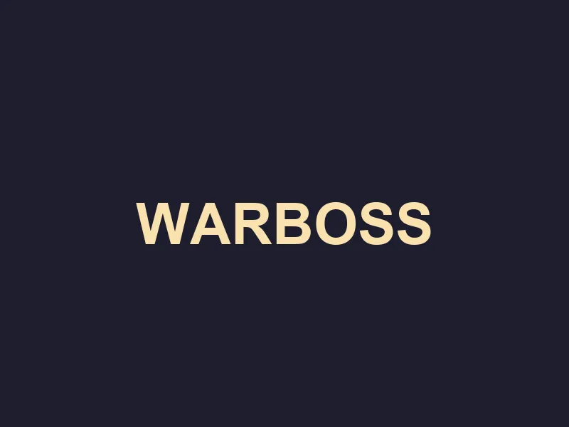

The Tithe of Blood
Sector: The Burning Wastes

A tide of green flesh washes over the defenses. The Waaagh is here. You must fight through the chaos to reach the Command Spire.
Push to the Spire!
Hold position.